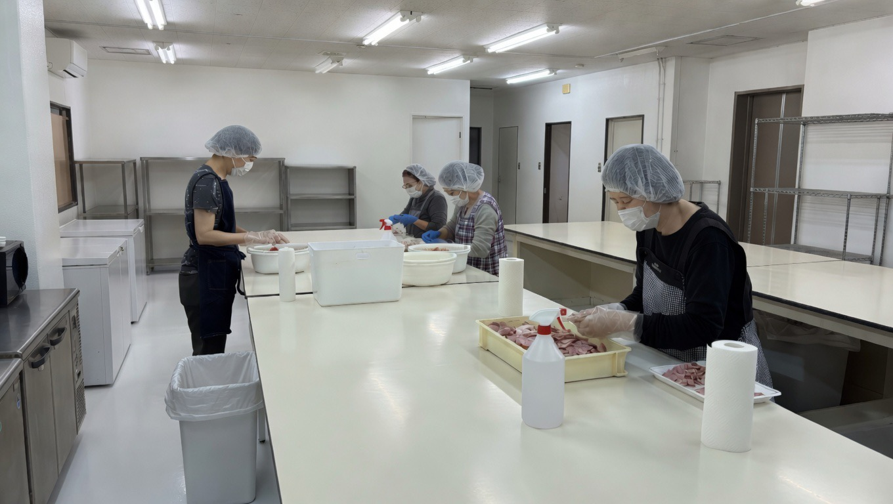
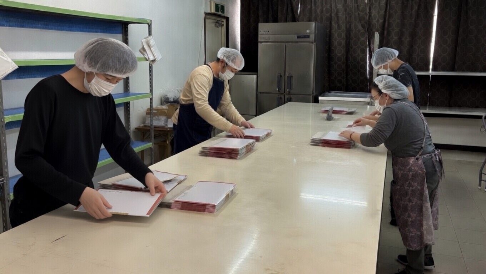

障がい福祉サービス（就労継続支援A型事業所）
仕事は社会とつながる大切な手段です。利用者様が自立した生活を送ることができるよう必要な支援を行い、日常生活や社会生活を営む力の向上を目指します。
第１フェーズから第４フェーズまで、時間は問いません。ゆっくり確実にステップアップしていきましょう。
興味がある仕事をゆっくり確実に習得し、自信を持てるようサポートします。
生活リズムを整え、仕事を通じて基本的なスケジュールを身につけます。
徐々に仕事内容を増やし、知識やスキルを身につけ、仕事を組み立てる力を養います。
職員や他の利用者と連携し、コミュニケーションを図りながら仕事に取り組みます。
〒556-0001
大阪府大阪市浪速区下寺1丁目6-12 GENSENビル5階
最寄り駅：大阪メトロ 谷町線 四天王寺前夕陽ケ丘駅（徒歩6分）


法隆寺門前 弁慶 店舗内にて
〒636-0116 奈良県生駒郡斑鳩町法隆寺1-6-33（株）ECO「法隆寺門前 弁慶」内
バス：奈良交通「法隆寺前」→ 徒歩5分